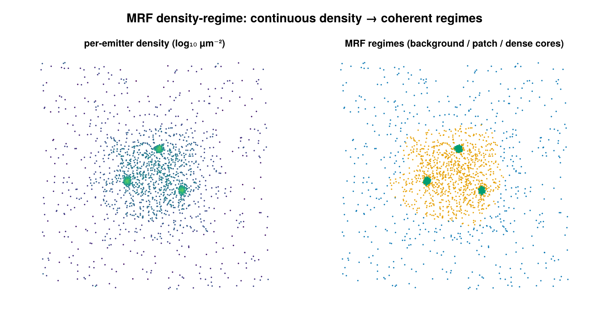

MRF density-regime
Adaptive-density clustering for 2D SMLM data that mixes density regimes — e.g. tight ~25 nm aggregates coexisting with µm-scale extended structure — where a single global ε would either over-merge the loose structure or shatter the tight knots. It is a cluster labeling backend selected by dispatch on MRFDensityClusterConfig: per-emitter density regimes are inferred, spatially smoothed, and the foreground is carved into clusters by connected components.

Left: per-emitter density on a field with sparse background, a medium-density patch, and dense cores. Right: the MRF assigns each emitter to one of three spatially-coherent density regimes.
Concept
A single distance/density threshold cannot serve a dataset with several density populations. Instead of one global parameter, this backend infers a per-emitter density regime from the local point density, then enforces spatial coherence on those regime labels before extracting clusters:
- Per-emitter density regimes. Each emitter's local density (Voronoi
1/areaor kNNk/(πr_k²)) is mapped tolog ρ, and a 1Dn_regimes-component Gaussian mixture is fit overlog ρ. Components are sorted ascending by mean, so regime 1 is the lowest-density (background) population andn_regimesis the densest. - Spatial smoothing via a Potts MRF. Raw per-emitter regime labels are noisy. A multi-class Potts Markov random field over the Delaunay (or kNN) neighbor graph penalizes neighboring emitters carrying different labels. This pulls borderline interior points up to foreground when their neighbors are foreground (fixes "missing middles") and pulls isolated tight knots in a low-density sea back down to background (kills spurious small clusters).
- Clusters = connected components on the foreground. The foreground is defined as regime
≥ 2. Connected components are computed over the same neighbor graph restricted to foreground nodes; components smaller thanmin_pointsare demoted to noise.
The lowest regime is treated as background/noise; only regime ≥ 2 is fed to the connected-components step.
How it works
Step 1 — local density. Per emitter i, density is estimated in one of two ways. The Voronoi estimator uses the inverse cell area,
\[\rho_i = \frac{1}{A_i},\]
which is simple but noisy (σ_log ≈ 1, since it averages over a single cell) and biased downward for thin elongated structures whose cells spill across the patch boundary. The kNN estimator (Loftsgaarden & Quesenberry 1965) integrates over the density_k nearest neighbors,
\[\rho_i = \frac{k}{\pi\, r_{k,i}^2},\]
where r_{k,i} is the Euclidean distance from i to its k-th nearest neighbor. This reduces noise to σ_log ≈ 1/√k and recovers patch-interior detection at the cost of some boundary blur. Each density is converted to log ρ_i; emitters with non-finite or non-positive density are dropped from the fit.
Step 2 — regime assignment. A 1D n_regimes-component Gaussian mixture is fit to the valid log ρ values by EM (deterministic quantile initialization, no randomness), producing weights w_k, means μ_k, and variances σ_k² sorted ascending by mean. The data term is the per-emitter, per-regime unary cost
\[U_{i,k} = -\log\!\bigl(w_k\, \mathcal{N}(\log\rho_i \mid \mu_k, \sigma_k^2)\bigr).\]
When regime_thresholds is supplied the GMM is bypassed and emitters are hard-binned (U_{i,k}=0 for the matching bin, 10^6 for the rest). When regime_gaussians is supplied the GMM is bypassed but the same soft Gaussian unaries above are built from the calibrated (means, vars, weights).
Step 3 — Potts MRF refinement. Labels L minimize the multi-class Potts energy over the neighbor graph,
\[E(L) = \sum_i U_{i,L_i} \;+\; \lambda \sum_{(i,j)\in\mathcal{G}} \mathbb{1}[L_i \neq L_j],\]
i.e. the pairwise term charges λ for every graph edge whose endpoints carry different labels. The neighbor graph \mathcal{G} is the Delaunay triangulation (default, reusing the step-1 tessellation) or a symmetrized kNN graph (graph_kind=:knn, using graph_k). Minimization is by Iterated Conditional Modes (ICM): labels initialize to the per-emitter unary argmin, then each emitter is repeatedly reassigned to the label minimizing U_{i,k} + λ · (#neighbors with label ≠ k), sweeping until no label changes or icm_iters is reached. When smoothness_lambda is nothing, λ is auto-set per group from the spread of the unary range:
\[\lambda = \max\!\bigl(10^{-6},\; \mathrm{MAD}_i(U_{i,\max} - U_{i,\min})\bigr),\]
where MAD is the median absolute deviation over valid emitters — a data-scale-free heuristic that needs no per-dataset tuning.
Step 4 — connected components. Foreground emitters (regime ≥ 2) are grouped by breadth-first connected components over the neighbor graph restricted to foreground nodes, so foreground points linked through a short chain of other foreground points merge into one cluster. Components below min_points are demoted to noise and the surviving clusters are compact-relabeled 1..K.
When per_dataset=true (default) the entire pipeline runs independently per dataset, so each cell gets its own GMM fit and auto-adapts to whatever density scale it lives at.
Configuration
MRFDensityClusterConfig fields:
| field | default | unit | meaning |
|---|---|---|---|
n_regimes | 2 | — | number of density regimes (≥ 2); regime 1 is background/noise, ≥ 2 is foreground |
regime_thresholds | nothing | log-density | optional explicit hard-bin thresholds, length n_regimes - 1, sorted ascending; bypasses GMM (borderline points cannot be rescued by neighbors) |
regime_gaussians | nothing | log-density | optional calibrated soft emission model (means, vars, weights); bypasses GMM but keeps soft unaries so the Potts prior can still flip borderline points |
density_estimator | :voronoi | — | :voronoi = 1/cell-area; :knn = k/(πr_k²) |
density_k | 20 | — | k for the kNN density estimator (:knn only); larger k → lower variance, more boundary blur; recommended 10–50 |
smoothness_lambda | nothing | unary-cost units | Potts smoothness weight λ; nothing → auto-set per group to max(1e-6, MAD(U_max - U_min)); must be > 0 if set |
graph_kind | :delaunay | — | neighbor graph for MRF and CC; :delaunay reuses the Voronoi tessellation when density_estimator = :voronoi (otherwise it builds one for the graph), :knn builds a symmetrized kNN graph |
graph_k | 8 | — | k for the kNN neighbor graph (graph_kind=:knn only) |
inference | :icm | — | MRF inference algorithm; only :icm supported |
icm_iters | 50 | passes | max ICM sweeps; stops early when no label changes |
min_points | 5 | emitters | minimum cluster size after CC; smaller components → noise |
use_3d | false | — | must be false; true raises ArgumentError (2D Voronoi only) |
per_dataset | true | — | run the full pipeline per dataset so each cell is fit independently |
remove_unclustered | false | — | drop noise (id == 0) emitters from the output SMLD |
regime_thresholds and regime_gaussians are mutually exclusive; setting both raises ArgumentError.
# (a) Default 2-regime auto-tuning: per-dataset GMM finds the
# foreground/background split, λ is auto-set, CC over Delaunay neighbors.
cfg = MRFDensityClusterConfig()
(smld_out, info) = cluster(smld, cfg)
regimes = smld_out.metadata["mrf_regime_per_emitter"] # 0..n_regimes per emitter# (b) 3-regime with manual log-density thresholds (e.g. learned offline).
# GMM is bypassed; points are hard-binned, then CC on regime >= 2.
cfg = MRFDensityClusterConfig(
n_regimes = 3,
regime_thresholds = [3.5, 5.0], # length n_regimes - 1, sorted ascending
min_points = 10,
)
(smld_out, info) = cluster(smld, cfg)# (c) Calibrated soft emissions: fit Gaussian unaries on a trusted calibration
# ROI, then apply to query ROIs. Unlike hard thresholds, borderline
# interior points can still be rescued by high-density neighbors via Potts.
gaussians = calibrate_regime_gaussians(calibration_smld;
n_regimes = 2,
density_estimator = :knn,
density_k = 20)
cfg = MRFDensityClusterConfig(
density_estimator = :knn,
density_k = 20,
regime_gaussians = gaussians, # NamedTuple (means, vars, weights)
)
(smld_out, info) = cluster(query_smld, cfg)calibrate_regime_gaussians(smld; n_regimes=2, density_estimator=:knn, density_k=20) returns the (means, vars, weights) NamedTuple in log-density space, ready to pass as regime_gaussians. calibrate_regime_thresholds(smld; n_regimes=2, density_estimator=:knn, density_k=20) is a thin wrapper that returns instead a Vector{Float64} of length n_regimes - 1 (the analytic Bayes decision boundaries between consecutive components, midpoint fallback when the discriminant is negative), ready to pass as regime_thresholds.
Output & interpretation
cluster returns the standard (smld_out, info::ClusterInfo) tuple. The input is never mutated — emitters are deep-copied and labels written onto the copy.
emitter.id:0for noise (lowest regime, ungroupable, or sub-min_pointscomponent) or1..Kfor cluster membership (per group whenper_dataset=true).info::ClusterInfo:n_locs_in,n_clustered,n_noise,n_clusters,cluster_sizes(indexed by cluster id),algorithm == :mrf_density, andelapsed_s.
MRF-specific results are stamped onto smld_out.metadata (HDBSCAN-style):
| key | type | meaning |
|---|---|---|
"mrf_regime_per_emitter" | Vector{Int} | per-emitter regime in 0..n_regimes, original emitter order; 0 = ungroupable (group < 3 points or too few valid densities), 1 = lowest density / background, n_regimes = highest density. On GMM failure all valid emitters fall back to regime 1, so the group yields no clusters. |
"mrf_lambda_used" | Vector{Float64} | per-group λ actually used (auto or explicit), in dataset-group order; NaN for skipped groups |
"mrf_regime_means" | Vector{Vector{Float64}} | per-group GMM component means in log-density space (sorted ascending); a vector of NaNs of length n_regimes when regime_thresholds was supplied (signals "manual hard binning, no fit"); calibrated means when regime_gaussians was supplied |
Foreground → clusters. Emitters with regime ≥ 2 form the foreground; connected components on that foreground (over the neighbor graph) become the clusters, after the min_points filter. So mrf_regime_per_emitter[i] ≥ 2 does not by itself guarantee emitter.id > 0 — the emitter must also land in a surviving (large-enough) connected component.
When it works / accuracy
Characterized on a controlled 5×5 µm A431-mimic synthetic (kNN density estimator, density_k=20, 2 regimes, ~13–22 k emitters across 12 patches, aspect ratios 1–20). Headline accuracy by density ratio (high / low):
| ratio | kNN-MRF | voronoi-GMM (no MRF) |
|---|---|---|
| 1.2× | 35% | 65% |
| 1.5× | 69% | 67% |
| 2.0× | 89% | 72% |
| 3.0× | 95% | 69% |
| 5.0× | 96% | 87% |
Use kNN-MRF when the density ratio is ≥ 2×. Operational floor: ratio ≥ 1.65× clears 75% accuracy; ratio ≥ 1.85× clears 85%. Below ~1.65× the two log ρ modes nearly overlap, GMM EM picks a degenerate split, and the Potts smoothness term amplifies the majority label across the graph — a false-positive saturation collapse (not a graceful recall loss).
kNN vs Voronoi-GMM. The Voronoi default preserves backward compatibility and is the right estimator for blob-shaped clusters. For thin elongated structures (widths comparable to the local nearest-neighbor distance — fibers narrower than ~150 nm at high density) Voronoi cells spill across the patch boundary and produce a patch-interior false-negative band; switch to density_estimator=:knn (with density_k=20) to recover interior detection. Because the MRF lacks the per-emitter independence of plain voronoi-GMM, it degrades catastrophically rather than gracefully below the density-ratio floor; at low contrast (ratio < 2×) prefer voronoi-GMM or calibrated soft emissions.
Use calibrated soft emissions (calibrate_regime_gaussians + regime_gaussians) when calibration ROIs are available and the density ratio is below 2×. This skips per-ROI GMM degeneracy while keeping soft unary costs, so the MRF can still fill borderline interior points. Hard regime_thresholds also stabilize low-contrast data but forfeit neighbor-rescue (the 10^6 penalty dwarfs the pairwise term).
kNN ball-radius bound. The kNN estimator assumes its ball radius r_k ≈ √(k/(πρ)) is smaller than the structure half-width; otherwise the ball spills into background and the GMM regime split can flip foreground/background. For thin patches where density_k=20 is too coarse, drop to density_k=8–10. At 2× contrast the patch-size operating range is: ≥ 1.0 µm holds 88–89% (85% gate), ≥ 0.5 µm clears the 75% gate, and ≤ 0.3 µm collapses (ball spillage). Within k ∈ [5, 80] the accuracy curve is concave-up with a shallow peak at k = 15–20, so the density_k=20 default is robust.
Notes & caveats
- 2D only.
use_3d=trueraisesArgumentError(DelaunayTriangulation.jl provides no 3D Voronoi). UseDBSCANConfigorHierarchicalConfigfor 3D. - Groups with fewer than 3 points are tagged all-noise (too small to tessellate) and recorded as
λ = NaN, means= NaN. - Exact-duplicate
(x, y)coordinates raiseArgumentErroronly when a Voronoi tessellation is actually built — i.e.density_estimator = :voronoiorgraph_kind = :delaunay. Withdensity_estimator = :knnandgraph_kind = :knn, no Voronoi guard runs and duplicates are not rejected. - Per-dataset GMM fit. With
per_dataset=trueeach dataset is fit and clustered independently;(dataset, id)uniquely identifies a cluster. - GMM-failure fallback. If the EM fit collapses (variance collapse, all-equal densities, component starvation) the group's valid emitters fall back to regime 1 (background) and contribute no clusters.
- Local MAP inference. ICM is local MAP, not a global optimizer; pathological low-contrast data without a representative calibration ROI can still be fragile.
References
- Potts model — the multi-class generalization of the Ising model, used here as the pairwise smoothness prior over the neighbor graph.
- Iterated Conditional Modes (ICM) — the local MAP inference used to minimize the Potts energy.
- Loftsgaarden, D. O. & Quesenberry, C. P. (1965) — the
k-nearest-neighbor density estimatorρ_k = k/(πr_k²).